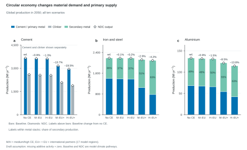
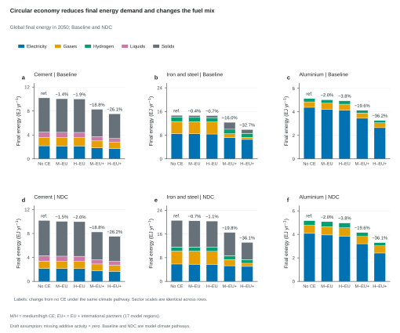
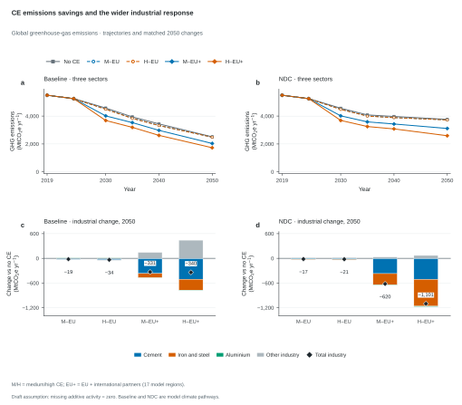
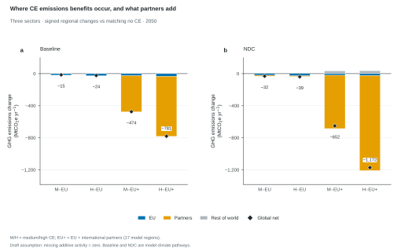
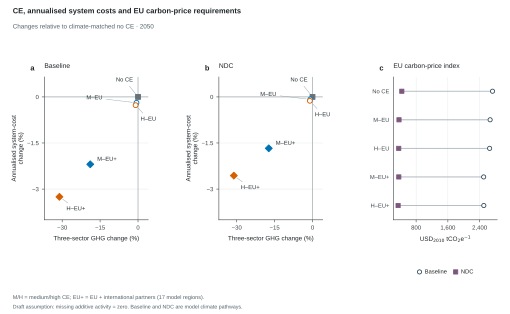

EU = EUE, EUM and EUW. EU + partners covers 17 model regions. Climate-pathway labels are retained without imposing an ambition ordering.
Missing additive activity is provisionally treated as zero; prices and costs retain missing values.
Figure 1
Circular economy changes material demand and primary supply
How does circular economy change material production and primary supply?

Figure 1. Circular economy changes material demand and primary supply. Global production in 2050 across five circular-economy settings. Bars show Baseline climate-policy results; open diamonds show NDC results at the same positions, retaining both pathways when production differences are small. Cement and clinker are distinct products and are plotted side by side, never summed. Steel and aluminium totals are primary plus secondary output. Labels within metal stacks give the Baseline secondary-production share; labels above bars give the Baseline change in cement or total metal production relative to Baseline no CE. Each panel has its own vertical scale. EU+ denotes CE adoption in the EU and the international partner regions, rather than global adoption. Missing additive activity is provisionally treated as zero; prices, costs and reported intensities retain missingness. No uncertainty estimates were supplied.
Figure 2
Circular economy reduces final energy demand and changes the fuel mix
How does circular economy change industrial final energy demand and its fuel mix?

Figure 2. Circular economy reduces final energy demand and changes the fuel mix. Global final energy demand in 2050 for cement, iron and steel, and aluminium. Rows distinguish Baseline and NDC climate-policy cases; bars distinguish the five CE settings. Segment colours identify exact parent energy-carrier categories. Nested fuel subcategories are excluded to prevent double counting. Cement has four reported carrier categories; steel and aluminium also include hydrogen. Labels give the percentage change in each sector's total final energy relative to no CE under the same climate pathway. The same y-axis scale is used within each sector across both rows, while sectors have different scales. EU+ means EU plus international partners. Missing additive activity is provisionally treated as zero; prices, costs and reported intensities retain missingness. No uncertainty estimates were supplied.
Figure 3
CE emissions savings and the wider industrial response
How do savings in the three sectors translate into total industrial emissions?

Figure 3. CE emissions savings and the wider industrial response. Global greenhouse-gas emissions in cement, iron and steel, and aluminium under (a) Baseline and (b) NDC. Markers show the model years. (c,d) Signed 2050 changes relative to no CE under the same climate pathway, decomposed into the three sectors and other industry. Increases and decreases stack separately from zero. Black diamonds and signed labels give the net change in total industrial emissions, including other industry. Other industry is calculated as reported total industrial GHG emissions minus the three sectors; its response is an accounting residual, not evidence for an identified physical rebound mechanism. Panel pairs use common vertical scales. EU+ denotes EU plus international partners, rather than worldwide CE adoption. Missing additive activity is provisionally treated as zero. Missing additive activity is provisionally treated as zero; prices, costs and reported intensities retain missingness. No uncertainty estimates were supplied.
Figure 4
Where CE emissions benefits occur, and what partners add
Where do emissions benefits occur, and what does international cooperation add?

Figure 4. Where CE emissions benefits occur, and what partners add. Regional contributions to the 2050 change in cement, iron and steel, and aluminium GHG emissions relative to no CE within (a) Baseline and (b) NDC. Negative values indicate lower emissions; positive values indicate higher emissions. Increases and decreases stack separately from zero. Black diamonds and signed labels show the global net change. EU comprises EUE, EUM and EUW. Partners comprise the 14 additional model regions designated in the supplied policy table, including ENE and ENW. The remaining 11 regions form Rest of world. These groups are disjoint and exhaust all 28 model regions. EU+ denotes CE implementation in the EU plus partners (17 regions), not worldwide implementation. Absolute changes avoid misleading percentages where regional reference emissions are near zero or negative. Both panels use the same vertical scale. Missing additive activity is provisionally treated as zero. Missing additive activity is provisionally treated as zero; prices, costs and reported intensities retain missingness. No uncertainty estimates were supplied.
Figure 5
CE, annualised system costs and EU carbon-price requirements
How does CE affect annualised system costs and EU carbon-price requirements?

Figure 5. CE, annualised system costs and EU carbon-price requirements. (a,b) 2050 percent changes in global GHG emissions from cement, iron and steel, and aluminium (horizontal axis), and in reported global annualised total system costs (vertical axis), relative to no CE under the same climate pathway. The grey square at the origin is no CE. Colour distinguishes medium and high CE; open circles denote EU-only implementation and filled diamonds denote EU plus partners. Annualised system costs are sums of the source Total Annualised Cost series in constant 2010 USD; they are neither cumulative expenditures nor a measure of welfare or investment. Percent changes require positive reference values. Both scatter panels use identical axis limits. (c) EU carbon-price index in constant 2010 USD per tonne CO2e, calculated from regional carbon prices with fixed weights proportional to 2019 industrial GHG emissions in baseline_noce. The same weights apply to all ten scenarios; this is a weighted price, not a ratio normalised to no CE. Lines connect the two model climate pathways for each CE setting. EU consists of EUE, EUM and EUW. Source costs and prices retain missingness; missing additive activity is provisionally treated as zero. Missing additive activity is provisionally treated as zero; prices, costs and reported intensities retain missingness. No uncertainty estimates were supplied.Definitions and calculation checks
Five CE settings are compared separately within Baseline and NDC. Each CE change uses no CE in the same climate pathway as reference.
EU contains EUE, EUM and EUW. Partners contain 14 further regions, including ENE and ENW. Rest contains the other 11. The three groups partition all 28 source regions.
The _gbl scenario suffix denotes CE applied in EU + international partners (17 model regions), according to the supplied table; it does not denote adoption in every model region.
Baseline and NDC are neutral climate-pathway labels. The export has lower 2050 industrial GHG emissions under Baseline; no ordering of ambition is assumed.
Global production values are nearly identical between climate pathways for matched CE settings. Figure 1 shows Baseline composition bars and NDC output diamonds; both branches are retained in source data.
Other industry is the exact all-industry GHG total minus the three material sectors. Its change is an accounting residual; physical mechanisms require model documentation.
Regional emissions changes use absolute units because several sector baselines are near zero or negative. Signed values are retained.
The EU carbon-price index uses common baseline_noce 2019 industrial-GHG weights in every scenario. Prices with a positive weight must be available; weights never use zero-filled missing emissions.
Cost comparisons use 2050 annualised modelled system costs, in constant 2010 USD. They do not use the anomalous 2019 cost values.
Missing additive activity is provisionally interpreted as zero. This export convention remains unconfirmed; every affected source input is recorded.
Supplied model years are connected directly. No uncertainty bands, annual interpolation, smoothing or extrapolation are added.